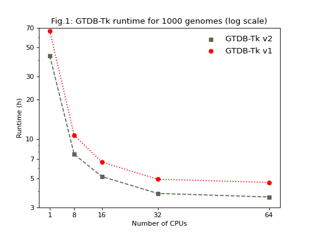
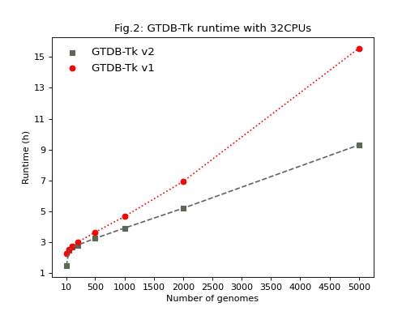

Performance
GTDB-Tk v2 runs 22% to 35% faster when processing 1000 genomes with 1 to 64 CPUs (Fig.1) and is >40% faster when processing 5,000 genomes using 32 CPUs (Fig.2).
The tests below were run on a machine with 4 AMD EPYC 7402 24-Core Processor and 512 GB of RAM.
(Source code, png, hires.png, pdf)



Fig. 1: Processing time (log scale) for 1,000 randomly selected GEM MAGs for increasing numbers of CPUs.
(Source code, png, hires.png, pdf)



Fig. 2: Processing time with 32 CPUs on increasing numbers of randomly selected GEM MAGs.